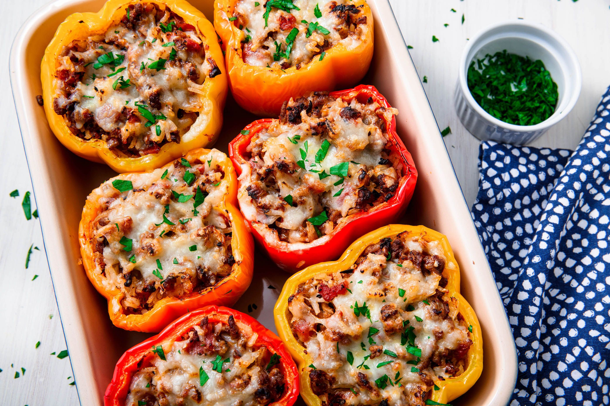

Stuffed Bell Peppers

Description
Cheesy and savory, easy Stuffed Bell Peppers are made with flavorful ground beef and fluffy brown rice for a healthy recipe! These stuffed bell peppers are the best because they can be made with lean ground beef, sausage, turkey, chicken, or vegetarian ingredients. You will enjoy these stuffed peppers because they are made with homemade tomato sauce, cheddar cheese, garlic, onions, paprika, and juicy tomatoes.
Ingredients
- 4 very large green bell peppers or about 5 small ones
- 15 ounce can tomato sauce
- 1/2 pound ground beef or turkey
- 1/3 cup chopped onion
- 1 cup cooked brown or white rice
- 1/8 teaspoon salt
- 1/8 teaspoon black pepper
- 1/8 teaspoon garlic powder
Steps
- Cut the tops off the peppers and remove the seeds. Place the peppers in a large saucepan and cover with water. Bring to a simmer and cook 3 minutes, just until the peppers are slightly soft. Drain, rinse with cool water and set aside on paper towels to drain.
- In a skillet, heat the ground beef and onion and cook until no pink remains. Drain.
- Add the salt, pepper, rice, garlic powder and half of the tomato sauce.
- Stir well and spoon into the peppers.
- Top with the other half of the tomato sauce.
- Bake in an ungreased dish at 350 for 25-30 minutes. Serve warm.